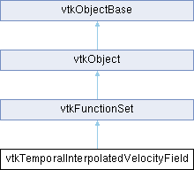

|
Etrek
|
|
Etrek
|
A helper class for interpolating between times during particle tracing. More...
#include <vtkTemporalInterpolatedVelocityField.h>

Public Types | |
| enum | IDStates { INSIDE_ALL = 0 , OUTSIDE_ALL = 1 , OUTSIDE_T0 = 2 , OUTSIDE_T1 = 3 } |
| enum | MeshOverTimeTypes { DIFFERENT = 0 , STATIC = 1 , LINEAR_TRANSFORMATION = 2 , SAME_TOPOLOGY = 3 } |
Public Member Functions | |
| vtkTypeMacro (vtkTemporalInterpolatedVelocityField, vtkFunctionSet) | |
| void | PrintSelf (ostream &os, vtkIndent indent) override |
| void | Initialize (vtkCompositeDataSet *t0, vtkCompositeDataSet *t1) |
| virtual void | CopyParameters (vtkTemporalInterpolatedVelocityField *from) |
| void | SelectVectors (const char *fieldName) |
| void | ClearCache () |
| bool | InterpolatePoint (vtkPointData *outPD1, vtkPointData *outPD2, vtkIdType outIndex) |
| bool | InterpolatePoint (int T, vtkPointData *outPD1, vtkIdType outIndex) |
| bool | GetVorticityData (int T, double pcoords[3], double *weights, vtkGenericCell *&cell, vtkDoubleArray *cellVectors) |
| void | ShowCacheResults () |
| void | AdvanceOneTimeStep () |
| vtkSetClampMacro (MeshOverTime, int, DIFFERENT, SAME_TOPOLOGY) | |
| void | SetMeshOverTimeToDifferent () |
| void | SetMeshOverTimeToStatic () |
| void | SetMeshOverTimeToLinearTransformation () |
| void | SetMeshOverTimeToSameTopology () |
| vtkGetMacro (MeshOverTime, int) | |
| int | FunctionValues (double *x, double *u) override |
| int | FunctionValuesAtT (int T, double *x, double *u) |
| void | AddDataSetAtTime (int N, double T, vtkDataSet *dataset) |
| bool | GetCachedCellIds (vtkIdType id[2], int ds[2]) |
| void | SetCachedCellIds (vtkIdType id[2], int ds[2]) |
| int | TestPoint (double *x) |
| int | QuickTestPoint (double *x) |
| vtkGetVector3Macro (LastGoodVelocity, double) | |
| vtkGetMacro (CurrentWeight, double) | |
| virtual void | SetFindCellStrategy (vtkFindCellStrategy *) |
| vtkGetObjectMacro (FindCellStrategy, vtkFindCellStrategy) | |
| Public Member Functions inherited from vtkFunctionSet | |
| vtkTypeMacro (vtkFunctionSet, vtkObject) | |
| virtual int | FunctionValues (double *x, double *f, void *vtkNotUsed(userData)) |
| virtual int | GetNumberOfFunctions () |
| virtual int | GetNumberOfIndependentVariables () |
| Public Member Functions inherited from vtkObject | |
| vtkBaseTypeMacro (vtkObject, vtkObjectBase) | |
| virtual void | DebugOn () |
| virtual void | DebugOff () |
| bool | GetDebug () |
| void | SetDebug (bool debugFlag) |
| virtual void | Modified () |
| virtual vtkMTimeType | GetMTime () |
| void | RemoveObserver (unsigned long tag) |
| void | RemoveObservers (unsigned long event) |
| void | RemoveObservers (const char *event) |
| void | RemoveAllObservers () |
| vtkTypeBool | HasObserver (unsigned long event) |
| vtkTypeBool | HasObserver (const char *event) |
| vtkTypeBool | InvokeEvent (unsigned long event) |
| vtkTypeBool | InvokeEvent (const char *event) |
| std::string | GetObjectDescription () const override |
| unsigned long | AddObserver (unsigned long event, vtkCommand *, float priority=0.0f) |
| unsigned long | AddObserver (const char *event, vtkCommand *, float priority=0.0f) |
| vtkCommand * | GetCommand (unsigned long tag) |
| void | RemoveObserver (vtkCommand *) |
| void | RemoveObservers (unsigned long event, vtkCommand *) |
| void | RemoveObservers (const char *event, vtkCommand *) |
| vtkTypeBool | HasObserver (unsigned long event, vtkCommand *) |
| vtkTypeBool | HasObserver (const char *event, vtkCommand *) |
| template<class U, class T> | |
| unsigned long | AddObserver (unsigned long event, U observer, void(T::*callback)(), float priority=0.0f) |
| template<class U, class T> | |
| unsigned long | AddObserver (unsigned long event, U observer, void(T::*callback)(vtkObject *, unsigned long, void *), float priority=0.0f) |
| template<class U, class T> | |
| unsigned long | AddObserver (unsigned long event, U observer, bool(T::*callback)(vtkObject *, unsigned long, void *), float priority=0.0f) |
| vtkTypeBool | InvokeEvent (unsigned long event, void *callData) |
| vtkTypeBool | InvokeEvent (const char *event, void *callData) |
| virtual void | SetObjectName (const std::string &objectName) |
| virtual std::string | GetObjectName () const |
| Public Member Functions inherited from vtkObjectBase | |
| const char * | GetClassName () const |
| virtual vtkTypeBool | IsA (const char *name) |
| virtual vtkIdType | GetNumberOfGenerationsFromBase (const char *name) |
| virtual void | Delete () |
| virtual void | FastDelete () |
| void | InitializeObjectBase () |
| void | Print (ostream &os) |
| void | Register (vtkObjectBase *o) |
| virtual void | UnRegister (vtkObjectBase *o) |
| int | GetReferenceCount () |
| void | SetReferenceCount (int) |
| bool | GetIsInMemkind () const |
| virtual void | PrintHeader (ostream &os, vtkIndent indent) |
| virtual void | PrintTrailer (ostream &os, vtkIndent indent) |
| virtual bool | UsesGarbageCollector () const |
Static Public Member Functions | |
| static vtkTemporalInterpolatedVelocityField * | New () |
| Static Public Member Functions inherited from vtkObject | |
| static vtkObject * | New () |
| static void | BreakOnError () |
| static void | SetGlobalWarningDisplay (vtkTypeBool val) |
| static void | GlobalWarningDisplayOn () |
| static void | GlobalWarningDisplayOff () |
| static vtkTypeBool | GetGlobalWarningDisplay () |
| Static Public Member Functions inherited from vtkObjectBase | |
| static vtkTypeBool | IsTypeOf (const char *name) |
| static vtkIdType | GetNumberOfGenerationsFromBaseType (const char *name) |
| static vtkObjectBase * | New () |
| static void | SetMemkindDirectory (const char *directoryname) |
| static bool | GetUsingMemkind () |
Protected Member Functions | |
| virtual void | SetVectorsSelection (const char *v) |
| void | InitializeWithLocators (vtkCompositeInterpolatedVelocityField *ivf, const std::vector< vtkDataSet * > &datasets, vtkFindCellStrategy *strategy, const std::vector< vtkSmartPointer< vtkLocator > > &locators, const std::vector< vtkSmartPointer< vtkAbstractCellLinks > > &links) |
| void | CreateLocators (const std::vector< vtkDataSet * > &datasets, vtkFindCellStrategy *strategy, std::vector< vtkSmartPointer< vtkLocator > > &locators) |
| void | CreateLinks (const std::vector< vtkDataSet * > &datasets, std::vector< vtkSmartPointer< vtkAbstractCellLinks > > &links) |
| void | CreateLinearTransformCellLocators (const std::vector< vtkSmartPointer< vtkLocator > > &locators, std::vector< vtkSmartPointer< vtkLocator > > &linearCellLocators) |
| Protected Member Functions inherited from vtkObject | |
| void | RegisterInternal (vtkObjectBase *, vtkTypeBool check) override |
| void | UnRegisterInternal (vtkObjectBase *, vtkTypeBool check) override |
| void | InternalGrabFocus (vtkCommand *mouseEvents, vtkCommand *keypressEvents=nullptr) |
| void | InternalReleaseFocus () |
| Protected Member Functions inherited from vtkObjectBase | |
| virtual void | ReportReferences (vtkGarbageCollector *) |
| vtkObjectBase (const vtkObjectBase &) | |
| void | operator= (const vtkObjectBase &) |
Protected Attributes | |
| int | MeshOverTime = MeshOverTimeTypes::DIFFERENT |
| double | Vals1 [3] |
| double | Vals2 [3] |
| double | Times [2] |
| double | LastGoodVelocity [3] |
| double | CurrentWeight |
| double | OneMinusWeight |
| double | ScaleCoeff |
| vtkSmartPointer< vtkCompositeInterpolatedVelocityField > | IVF [2] |
| std::vector< vtkSmartPointer< vtkLocator > > | Locators [2] |
| std::vector< vtkSmartPointer< vtkLocator > > | InitialCellLocators |
| std::vector< vtkSmartPointer< vtkAbstractCellLinks > > | Links [2] |
| std::vector< size_t > | MaxCellSizes [2] |
| vtkFindCellStrategy * | FindCellStrategy |
| Protected Attributes inherited from vtkFunctionSet | |
| int | NumFuncs |
| int | NumIndepVars |
| Protected Attributes inherited from vtkObject | |
| bool | Debug |
| vtkTimeStamp | MTime |
| vtkSubjectHelper * | SubjectHelper |
| std::string | ObjectName |
| Protected Attributes inherited from vtkObjectBase | |
| std::atomic< int32_t > | ReferenceCount |
| vtkWeakPointerBase ** | WeakPointers |
Static Protected Attributes | |
| static const double | WEIGHT_TO_TOLERANCE |
Additional Inherited Members | |
| Static Protected Member Functions inherited from vtkObjectBase | |
| static vtkMallocingFunction | GetCurrentMallocFunction () |
| static vtkReallocingFunction | GetCurrentReallocFunction () |
| static vtkFreeingFunction | GetCurrentFreeFunction () |
| static vtkFreeingFunction | GetAlternateFreeFunction () |
A helper class for interpolating between times during particle tracing.
vtkTemporalInterpolatedVelocityField is a general purpose helper for the temporal particle tracing code (vtkParticleTracerBase)
It maintains two copies of vtkCompositeInterpolatedVelocityField internally and uses them to obtain velocity values at time T0 and T1.
In fact the class does quite a bit more than this because when the geometry of the datasets is the same at T0 and T1, we can reuse cached cell Ids and weights used in the cell interpolation routines. Additionally, the same weights can be used when interpolating (point) scalar values and computing vorticity etc.
States that define where the cell id are
Types of Variance of Mesh over time
| void vtkTemporalInterpolatedVelocityField::AddDataSetAtTime | ( | int | N, |
| double | T, | ||
| vtkDataSet * | dataset ) |
In order to use this class, two sets of data must be supplied, corresponding to times T1 and T2. Data is added via this function.
| void vtkTemporalInterpolatedVelocityField::ClearCache | ( | ) |
Set the last cell id to -1 so that the next search does not start from the previous cell
|
virtual |
Copy essential parameters between instances of this class. This generally is used to copy from instance prototype to another, or to copy interpolators between thread instances. Sub-classes can contribute to the parameter copying process via chaining.
|
overridevirtual |
Evaluate the velocity field, f, at (x, y, z, t). For now, t is ignored.
Reimplemented from vtkFunctionSet.
| bool vtkTemporalInterpolatedVelocityField::GetCachedCellIds | ( | vtkIdType | id[2], |
| int | ds[2] ) |
Between iterations of the Particle Tracer, Id's of the Cell are stored and then at the start of the next particle the Ids are set to 'pre-fill' the cache.
| void vtkTemporalInterpolatedVelocityField::Initialize | ( | vtkCompositeDataSet * | t0, |
| vtkCompositeDataSet * | t1 ) |
The Initialize() method is used to build and cache supporting structures (such as locators) which are used when operating on the interpolated velocity field. This method is needed mainly to deal with thread safety issues; i.e., these supporting structures must be built at the right time to avoid race conditions.
|
static |
Construct a vtkTemporalInterpolatedVelocityField with no initial data set. Caching is on. LastCellId is set to -1.
|
overridevirtual |
Methods invoked by print to print information about the object including superclasses. Typically not called by the user (use Print() instead) but used in the hierarchical print process to combine the output of several classes.
Reimplemented from vtkFunctionSet.
|
inline |
If you want to work with an arbitrary vector array, then set its name here. By default this is nullptr and the filter will use the active vector array.
|
virtual |
Set / get the strategy used to perform the FindCell() operation. This strategy is used when operating on vtkPointSet subclasses. Note if the input is a composite dataset then the strategy will be used to clone one strategy per leaf dataset.
| int vtkTemporalInterpolatedVelocityField::TestPoint | ( | double * | x | ) |
A utility function which evaluates the point at T1, T2 to see if it is inside the data at both times or only one.
| vtkTemporalInterpolatedVelocityField::vtkGetMacro | ( | CurrentWeight | , |
| double | ) |
Get the most recent weight between 0->1 from T1->T2. Initial value is 0.
| vtkTemporalInterpolatedVelocityField::vtkGetVector3Macro | ( | LastGoodVelocity | , |
| double | ) |
If an interpolation was successful, we can retrieve the last computed value from here. Initial value is (0.0,0.0,0.0)